각 시안 위아래에 실제 앞뒤 섹션 캡처를 붙여, 페이지 흐름 안에서 어울리는지 볼 수 있게 했습니다. 휴대폰 화면 기준으로 확인해 주세요.
지금은 검정 배경이라 앞뒤 흰 섹션과 따로 노는 느낌 → 페이지 톤에 맞춘 6가지 방향
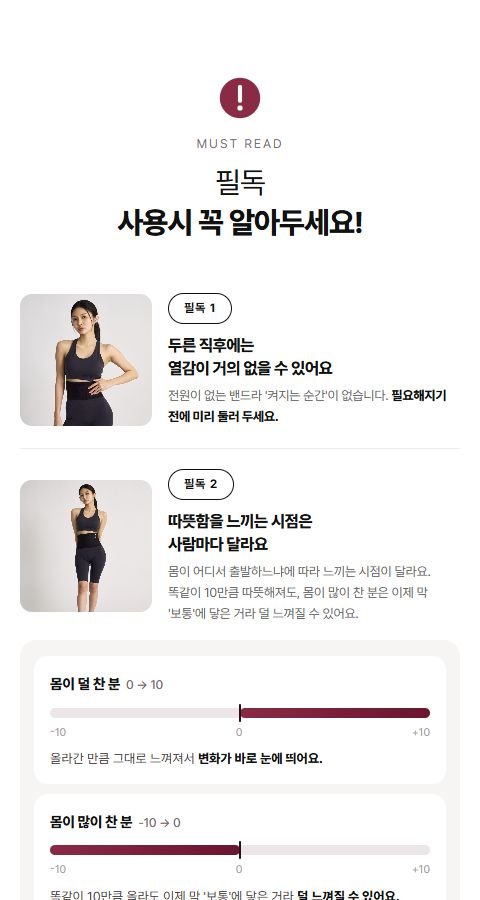
V1
HOW TO WEAR처럼 둥근 사진 옆에 배지·제목·본문을 두어 다음 섹션과 자연스럽게 잇는 안.
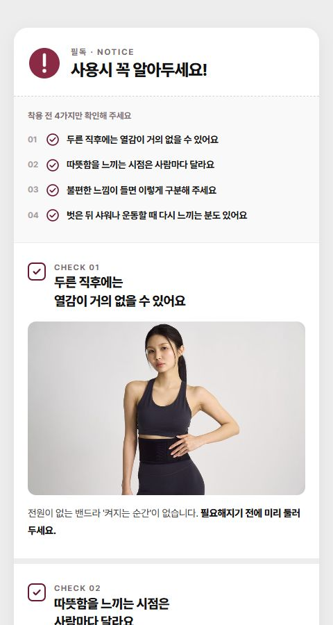
V2
공지판 카드에 '4가지 한눈에 보기'를 먼저 보여 주고 CHECK 01~04를 이어 붙인 안.
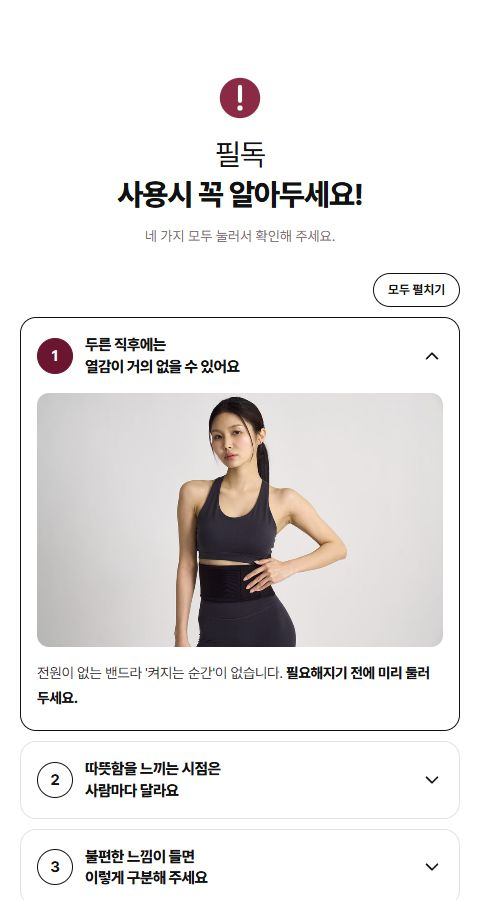
V3
번호와 제목만 보이는 접이식 목록에 '모두 펼치기'를 달아 길이를 줄인 안.
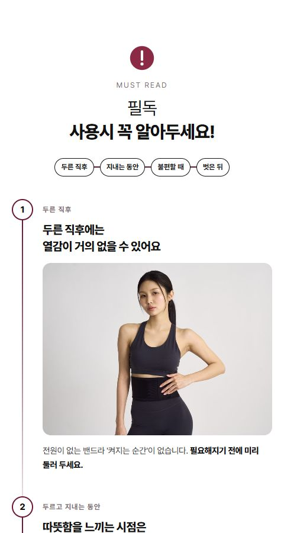
V4
두른 직후 → 지내는 동안 → 불편할 때 → 벗은 뒤, 착용 순서대로 세로선으로 이은 안.
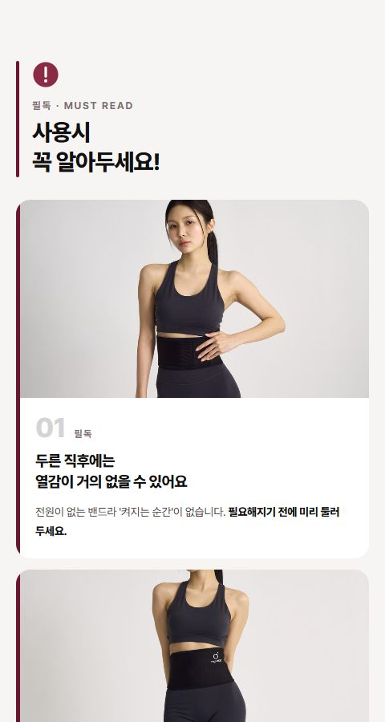
V5
연회색 배경에 흰 카드, 왼쪽 버건디 띠와 큰 번호로 '주의 안내'임을 표시한 안.
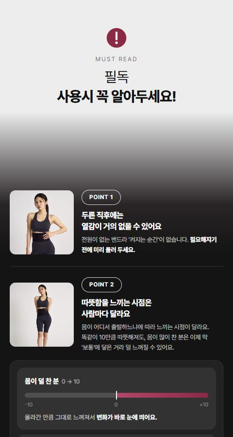
V6
연회색에서 검정으로 서서히 넘어갔다 다음 섹션 톤으로 끝나, 다크 느낌은 살리고 끊김은 없앤 안.
매일 약 2년 / 가끔 최대 5년을 보여 주는 6가지 방향
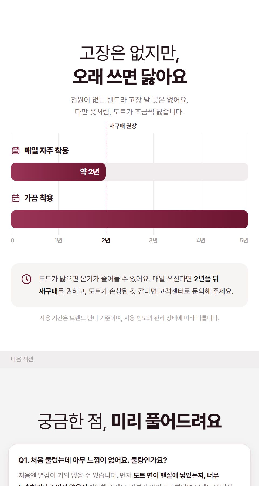
V1
연도 눈금 위로 막대가 차오르고 2년 지점에 재구매 시점 마커를 세운 그래프형.
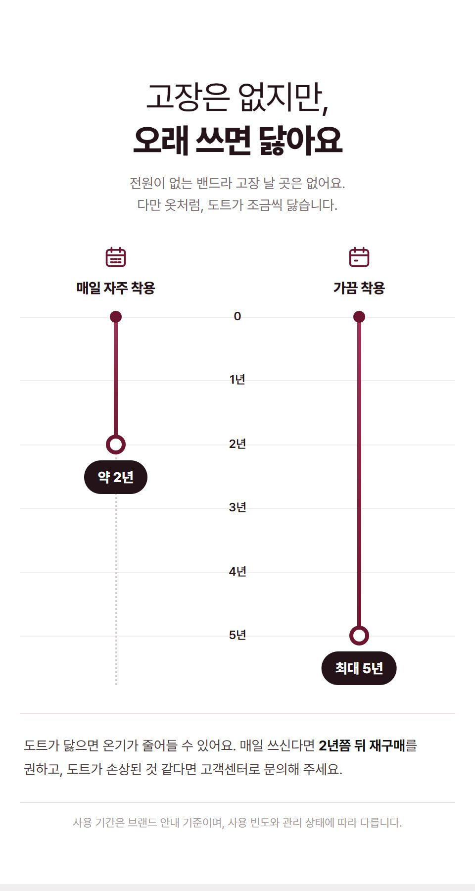
V2
0~5년 세로 연표를 따라 두 라인이 내려가다 2년·5년에서 멈추는 타임라인형.
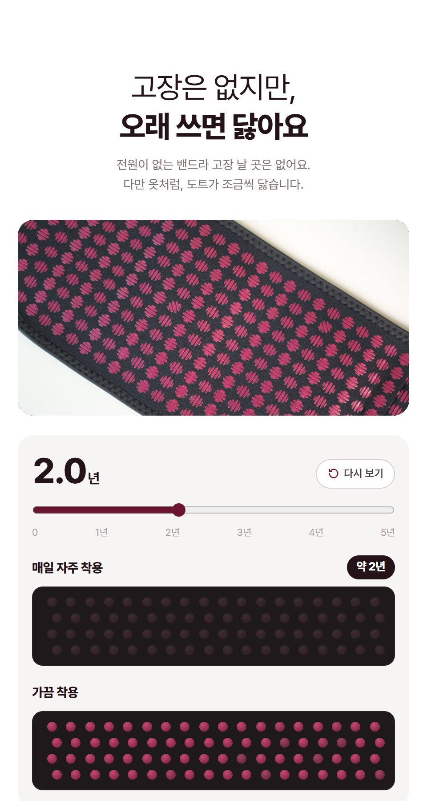
V3
도트 띠가 연도가 흐를수록 조금씩 흐려지는 인터랙티브형(자동 재생·슬라이더).
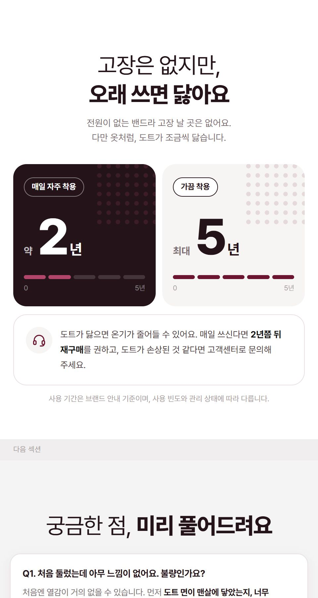
V4
큰 숫자 2년·5년을 카운트업으로 보여 주고 눈금으로 길이 차이를 비교하는 카드형.
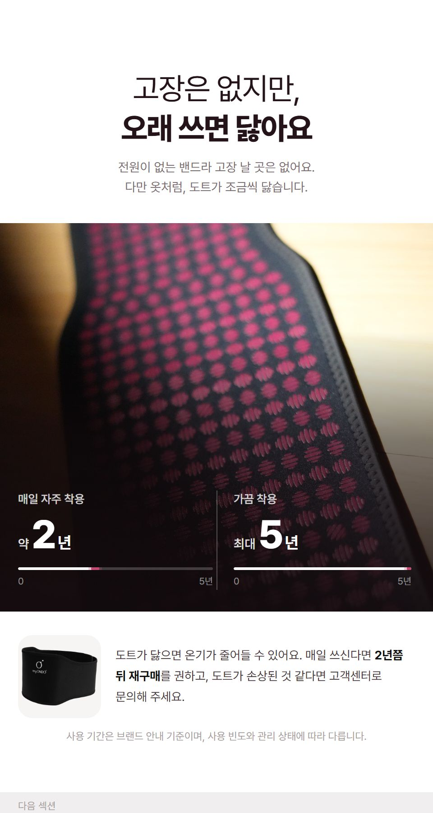
V5
도트 접사 사진 위에 2년·5년을 진행선과 함께 얹어 실물감을 살린 사진형.
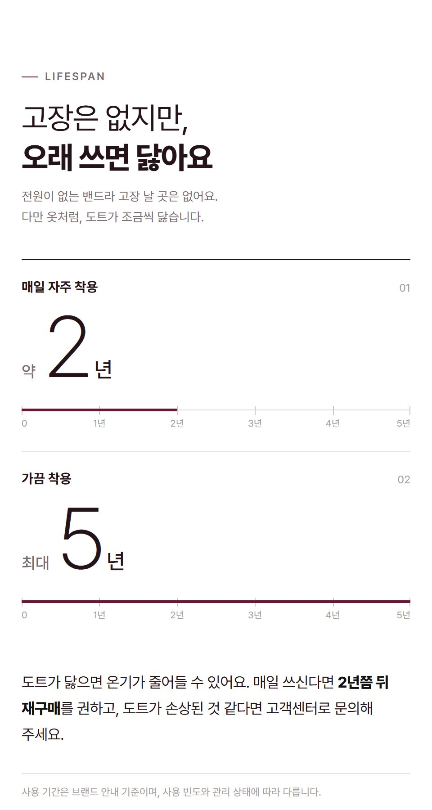
V6
얇고 큰 숫자 2와 5 아래 가는 눈금자 선이 그어지는 절제된 편집형.
겉면만 화상, 심부는 그대로라는 점을 보여 주는 6가지 방향
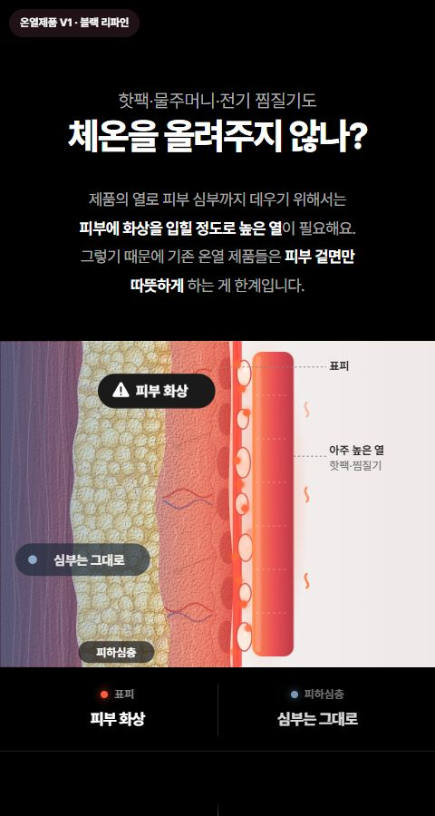
V1
기존 블랙을 다듬고 '피부 화상 / 심부는 그대로' 범례가 애니메이션에 맞춰 켜지는 안.
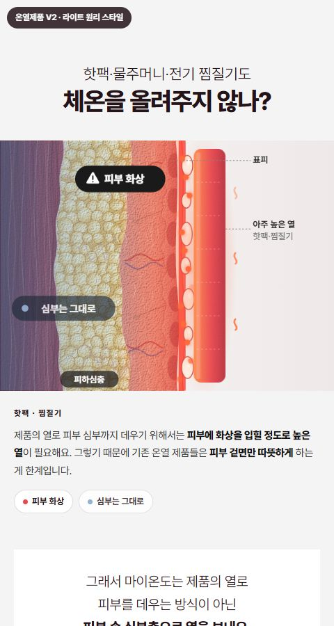
V2
다음 원리 섹션과 같은 연회색 배경·일러스트 프레임으로 자연스럽게 잇는 라이트 버전.
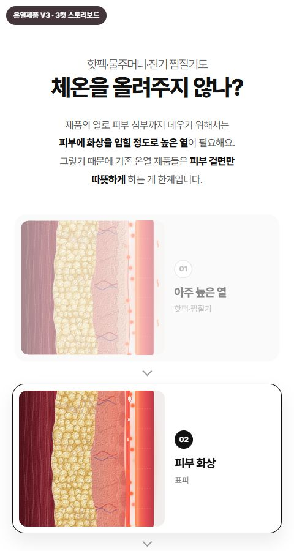
V3
아주 높은 열 → 피부 화상 → 심부는 그대로, 세 장면이 순서대로 강조되는 안.
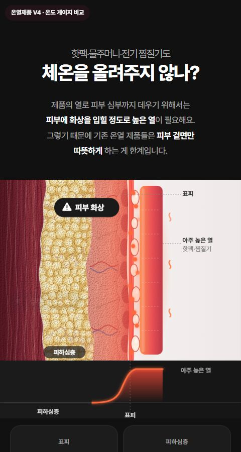
V4
깊이별 열 곡선과 표피·피하심층 온도계로 겉면만 뜨거워짐을 보여 주는 안.
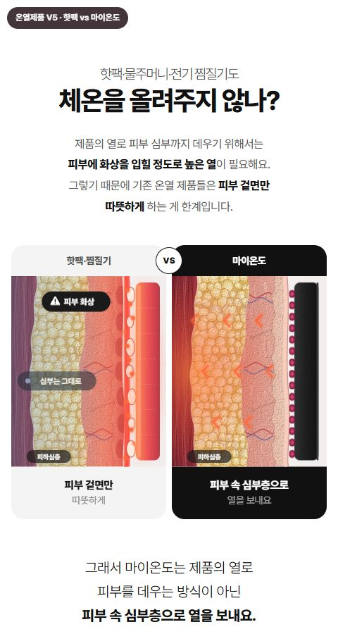
V5
겉면 화상과 심부층으로 가는 열을 좌우로 나란히 대비하는 VS 비교형.
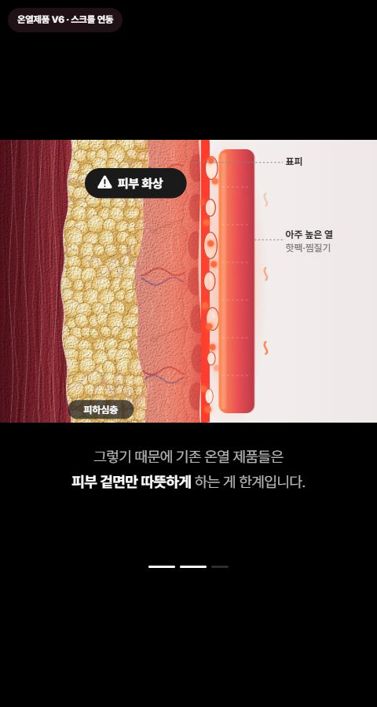
V6
일러스트를 고정하고 스크롤에 따라 열 접촉 → 화상 → 심부 그대로가 진행되는 안.
모든 그림은 이해를 돕기 위한 개념 연출이며, 기간·체감은 브랜드 안내 기준입니다.